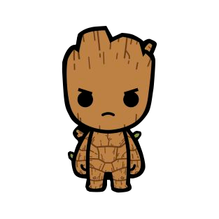
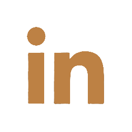
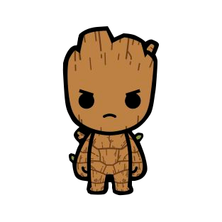
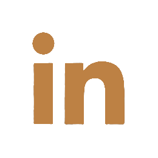

Danilo Nascimento
Eu sou o Danilo Nascimento, 25 anos, moro na zona oeste do Rio de Janeiro, gosto de uma boa música e sou músico por Hobby, sempre tive curiosidade na tecnologia, um dos meus maiores desafios e que me empolga é exatamente aprender.
Eric Barbosa
Olá! meu nome é Eric Barbosa. Estou graduando engenharia eletrônica e de computação na UFRJ e, junto com meus companheiros de grupo, fazendo o curso de desenvolvimento web fullstack pela resilia. No meu tempo livre eu adoro jogar vídeo game, meu jogo favorito é Destiny 2, então quem quiser me adicionar na steam para jogarmos é só chamar... estamos muito empolgados com a criaçao desse site e esperamos que vocês se divirtam mais que nós com os jogos que estão e ainda serão disponibilizados! Vamos 💪
Fabricio Salema
Calmo e bem humorado, tem 25 anos, residente do bairro de Pilares no Rio de Janeiro. Seus gostos vão de cinema a games e muita música, teve uma passagem de 2 anos pelo Exército e após isso encontrou sua paixão por programação em um curso de 1 ano e meio sem querer. Ao fim conseguiu uma vaga na faculdade de Análise de Sistemas e hoje segue feliz sabendo que faz o que gosta.
Jonathan Falcão
Me chamo Jonathan Falcão, tenho 21 anos e sou morador do Engenho Novo na cidade do Rio de Janeiro. Atualmente sou um Desenvolvedor Web em Desenvolvimento, ou seja, estou estudando para me tornar um programador web full stack. No momento cursando Ciências Econômicas na UFRJ, mas pretendo trocar para Ciência da Computação no final de 2022. Além disso, sou formado como Técnico Ambiental pelo Colégio Pedro II, já escrevi uma monografia e tenho experiência tanto na área de pesquisa acadêmica quanto em rotinas administrativas de escritório.
 



Jonas Sousa
Determinado e dedicado, tenho 24 anos e sou natural do Rio de Janeiro, sou apaixonado por música e amo tocar guitarra. Trabalhei por 4 anos na FAB (Força Áerea Brasileira), e tive uma vasta experiência na área da informática, no momento, estou em uma transição de carreira para área da programação, estudo no projeto programadores carioca e remotamente na Alura, tais cursos me trazem desafios diariamente, e são esses desafios que me motivam proseguir no foco, para que em breve eu conquiste meu espaço nesse mercado.